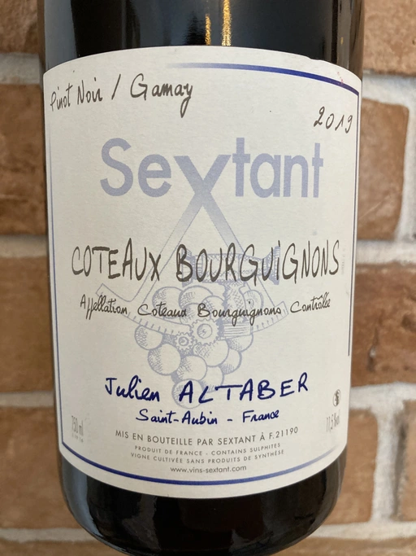

- Type
- Red Still, Dry
- Producer
- Sextant
- Vintage
- 2019
- Location
- France, Coteaux Bourguignons AOC
- Grapes
- Pinot Noir, Gamay
- Alcohol
- 11.5
- Sugar
- 3
- Price
- 730 UAH
- Cellar
- N/A
Ratings
2021-03-18 - 7.50
Well, it’s a nice blend of Gamay and Pinot Noir. A little bit ‘animal’ nose, with red fruits and a little bit of VA. Round, fruity and elegant.
Despite low abv (11.5) it feels quite powerful because of VA.
Overall it feels like more elegant and less rustic version of Cascina Tavijn Vino Rosso L.FB25/2019/2 2019.